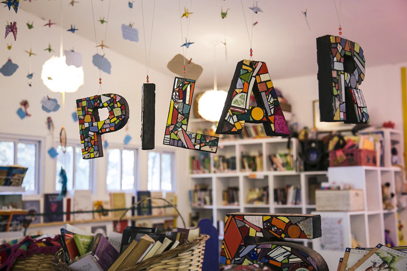

Origen y Memoria
Un espacio nacido del amor por las infancias
La Biblioteca Popular "Del otro lado del árbol" nació en la ciudad de La Plata dentro del Parque Saavedra como una iniciativa comunitaria impulsada para honrar la memoria de Pilar y garantizar el derecho de cada niño y niña a jugar, leer y expresarse libremente.
Lo que comenzó como una pequeña plaza con libros al aire libre se convirtió con los años en un refugio cultural abierto a toda la comunidad, donde familias, docentes, artistas y voluntarios construyen cotidianamente un lugar de afecto y aprendizaje.